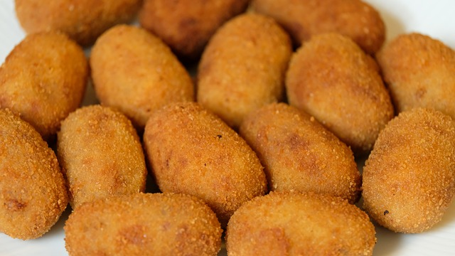
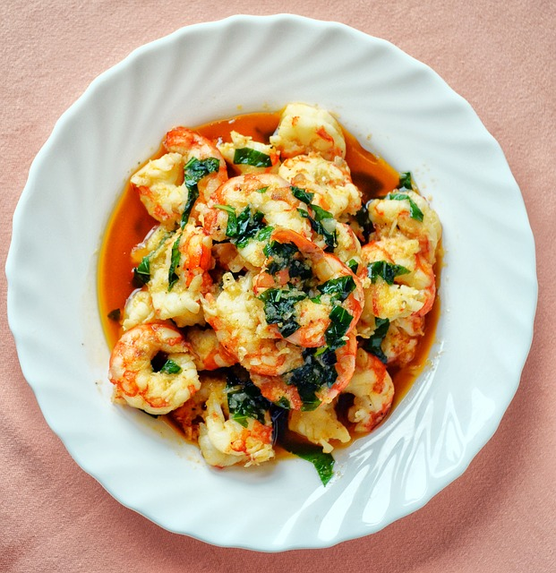
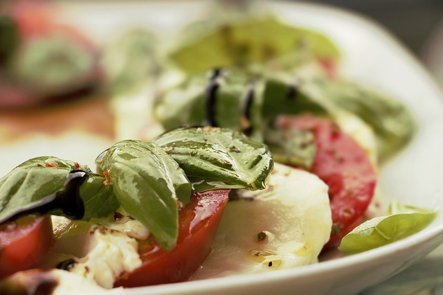

CROQUETAS DE BACALAO |
Ingredientes
- 200 gr de bacalao desmigado y desalado
- 1 cebolla
- 2 dientes de ajo
- 100 gr de harina
- 100 gr de mantequilla
- 850 ml de leche
- Aceite de oliva
- Pimienta negra
- Una pizca de nuez moscada
- Perejil fresco al gusto
|
 |
| Paso a paso |
- Desmenuzamos y sacamos las espinas que pueda tener el bacalao. Lo rehogamos en una sartén con un poco de aceite unos minutos. Lo escurrimos bien y reservamos mientras hacemos la bechamel. Echamos en una cazuela amplia la mantequilla, cuando se haya disuelto añadimos la harina y con unas varillas removemos y “freímos” un par de minutos para que la harina pierda el sabor a crudo.
- Agregamos la leche poco a poco a la vez que removemos con viveza para evitar que se formen grumos. Iremos dejando que se consuma la leche antes de añadir otro chorrito. Subimos un poco el fuego, y sin parar de remover, cuando comience a hervir la bechamel salpimentamos y añadimos nuez moscada al gusto.
- Cocinamos la crema durante unos 15 minutos sin dejar de remover en ningún momento para evitar que se pegue. A los 10 minutos más o menos, antes de terminar de cocinar la masa, agregamos el bacalao y lo mezclamos. Vertemos la masa en una fuente, tapamos con film transparente y refrigeramos unas horas para que ésta se solidifique.
- Para dar forma a las croquetas con ayuda de una cuchara cogemos porciones de masa, hacemos bolitas en este caso,y pasamos por pan rallado, huevo y pan rallado, en este orden. Hacemos lo mismo hasta terminar toda la masa. Freímos las croquetas en abundante aceite de oliva y dejamos reposar sobre papel absorbente antes de servir.
|
|
Inicio
|
GAMBAS AL AJILLO |
Ingredientes
- 450g de camarones limpios
- 3 cucharadas de aceite de oliva
- ½ taza de vino blanco
- 4 cucharadas de mantequilla de sal
- 1 cucharada de cebolleta
- 3 dientes de ajo
- 1 cucharada de perejil fresco picado
- 1 cucharada de zumo de limón
- 6 rodajas de pan de campo
- ¼ cucharadita de ají molido
- 1 limón
- Sal
|
 |
| Paso a paso |
- Calienta la sartén a fuego medio con el aceite de oliva.
- Pela los dientes de ajo y pícalos. Cocínalos en la sartén moviendo el mango de la misma por unos dos o tres minutos hasta que queden ligeramente dorados.
- Sube la temperatura y cocina los camarones hasta que logren obtener un tono rosado por todos lados. Esto podrá llevar unos dos minutos.
- Añade la cebolleta picada, la mantequilla cortada en cubos, el zumo de limón y el vino blanco. Lleva al hervor hasta que la salsa se reduzca a la mitad.
- Cuando esté reducida, agrega el ají molido y el perejil fresco picado. Sazona con sal.
|
|
Inicio
|
CAPRESA |
Ingredientes
- 3 o 4 tomates
- 450 g (1 libra) de queso mozzarella fresco
- ½ taza (13 g) de hojas de albahaca fresca
- sal y pimienta
|
 |
| Paso a paso |
- Corta los tomates en trozos de ½ cm (¼ de pulgada) de grosor. Usa los tomates más redondos que encuentres para que las rodajas tengan un tamaño similar. Corta los tomates con un cuchillo de sierra para evitar aplastarlos por accidente. Deja a un lado las rodajas cuando termines.
- Corta el queso mozzarella en rodajas gruesas de ½ cm (¼ de pulgada). Busca un queso mozzarella fresco en la sección de lácteos o embutidos del supermercado. Corta el queso con un cuchillo de chef. Haz las rodajas del mismo tamaño y grosor que los tomates.
- Traslapa las rodajas de tomate y de mozzarella en un plato para servir. Coloca primero una rodaja de tomate cerca del borde del plato. Luego, coloca una de queso de modo que cubra la mitad de la rodaja de tomate. Alterna las rodajas de tomate y queso en todo el plato hasta cubrirlo por completo.
- Pica las hojas de albahaca y espárcelas sobre los tomates y el queso. Acomoda 5 o 7 hojas de albahaca una por encima de la otra, y enróllalas en forma de cigarro. Córtalas finamente con un cuchillo de chef y apártalas. Sigue enrollando y cortando hasta terminar con todas las hojas. Espárcelas sobre el tomate y la mozzarella.
- Espolvorea sal y pimienta para sazonar la ensalada. Ajusta la cantidad de sal y pimienta según la cantidad de condimentos que quieras agregar. Para darle a la ensalada un sabor más fresco, usa solo una pizca de cada condimento. De lo contrario, sigue agregándolos por pizcas a tu gusto.
- Sirve la ensalada justo después de hacerla. Con un tenedor, toma de la bandeja rodajas de tomate, mozzarella y una hoja de albahaca. Prueba todos los ingredientes combinados para sentir el mejor sabor.
|